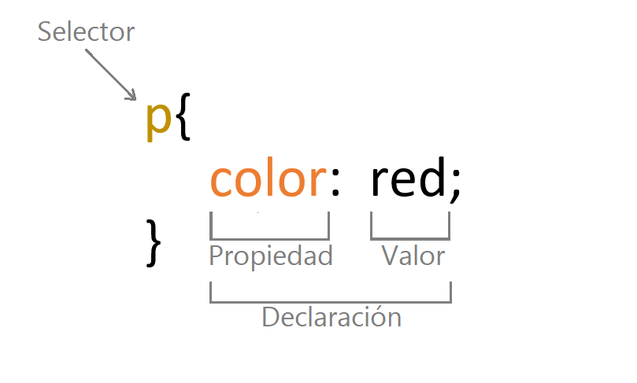

Propósito del sitio
Esta página web tiene como objetivo ofrecer información sobre el uso de la sintaxis y selectores CSS, así como sobre la interacción humano ordenador. En ella se explica brevemente la sintaxis y selectores CSS.

Esta página web tiene como objetivo ofrecer información sobre el uso de la sintaxis y selectores CSS, así como sobre la interacción humano ordenador. En ella se explica brevemente la sintaxis y selectores CSS.
La sintaxis CSS se puede dividir en tres partes: selectores, propiedades y valores.
Los selectores CSS, como se mencionó anteriormente, son palabras clave o frases que se usan para identificar un elemento de HTML para modificarlo, por ejemplo, para cambiar el color de todo el texto en un documento, se puede usar el selector "h1" para seleccionar todos los títulos de primer nivel y aplicar una propiedad de estilo como "color: red", también se pueden seleccionar por medio del ID o nombre de clase.
Ejemplo:
h1 { color: red }
donde h1 es el selector, y el que se encuentra encerrado entre llaves es la declaración.
Los selectores pueden ser muy simples, como en el ejemplo anterior, o pueden ser más complejos, usando varias cláusulas y combinaciones
Ribera Turró, M. (2005). Evolución y tendencias en la interacción persona–ordenador. Recuperado de Diseño Web con CSS: 2ª Edición - Alicia Durango - Google Libros
"La interacción humano-computadora se preocupa por la realización conjunta de tareas por parte de humanos y máquinas; por la estructura de la comunicación entre humanos y máquinas; por las capacidades humanas para usar máquinas (incluyendo la facilidad de uso de las interfaces); por los algoritmos y el programado de la propia interfaz; por las preocupaciones de ingeniería que surgen al diseñar e construir interfaces; por el proceso de especificación, diseño e implementación de interfaces; y por los compromisos de diseño. La interacción humano-computadora tiene así un aspecto científico, un aspecto de ingeniería, y un aspecto de diseño".
urriculla, C.-C. j. (1991). ACM SIGCHI Curriculla for Human-Computer Interaction.
El contenido de esta página puede dar una noción básica sobre el uso de los selectores y la sintaxis de CSS, de forma que puede ser de utilidad para quien desea comenzar a utilizarlo.